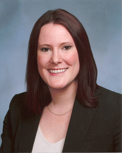

Kari T. Knudsen
Prior to law school, Kari T. Knudsen earned her Bachelor of Arts in Spanish and Political Science for Northwestern University in Evanston, Illinois. After college, she worked at a large premier Chicago law firm as a legal assistant, and gained first-hand expertise and experience in a class-action toxic tort, trespass, and nuisance cases.
Kari earned her Juris Doctor from Chicago-Kent College of Law in 2009. While in law school, she gained expertise and hands-on experience in immigration, evironmental, and animal law. After completing her first year in law school, she return to the previous law firm while continuously completing her J.D. and gained invaluable knowledge of the federal appellate process.
Kari focuses her practice on small business law, immigration, family law, tort and estate planning.